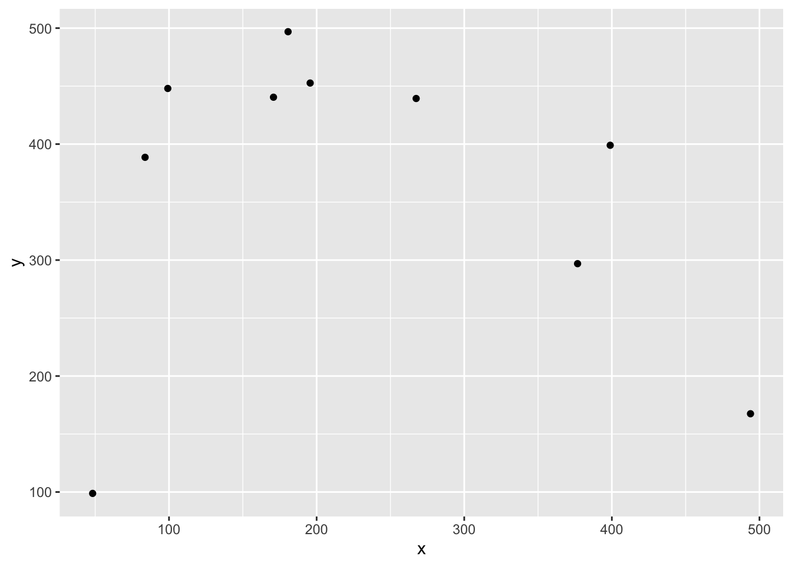
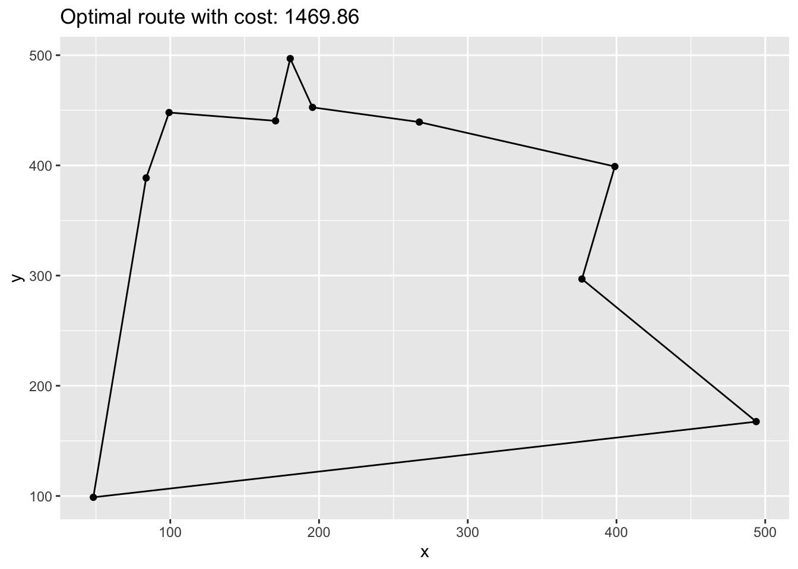

Chapter 3 Routing Problems
3.1 The Traveling Salesperson Problem using MILP
We describe how to solve a TSP using rmpk.
Wikipedia gives the following definition:
The travelling salesman problem (TSP) asks the following question: Given a list of cities and the distances between each pair of cities, what is the shortest possible route that visits each city exactly once and returns to the origin city?
Also that Wikipedia article is a good starting point if you want to know more about the topic.
With the basic definition you have a set of verticies (cities) and a set of edges (connection between cities). Each edge has an associated distance \(d > 0\). That distance could be travel time, distance in km or the monetary cost associated with traveling from one city to another. Restrictions on the distances lead to special cases of the problem. For example the metric-TSP requires that the triangle inequality holds for all triples of edges.
In this vignette we will construct a TSP with random points within an Euclidean space.
3.1.1 Setting
First let us import some librarys
library(knitr)
library(dplyr)
library(ggplot2)The number of cities:
n <- 10Boundary of our Euclidean space:
# from 0 to ...
max_x <- 500
max_y <- 500Some random cities:
set.seed(123456)
cities <- data.frame(id = 1:n, x = runif(n, max = max_x), y = runif(n, max = max_y))ggplot(cities, aes(x, y)) +
geom_point()
Now the distance matrix
distance <- as.matrix(dist(select(cities, x, y), diag = TRUE, upper = TRUE))3.1.2 Model formulation
There are essential two prominent ways to model a TSP as a MILP. One is to formulate the full model using the Miller–Tucker–Zemlin (MTZ) formulation and the other option is to use the so-called sub-tour elimination constraints .1
The first formulation is fairly compact (quadratic many constraints and variables) but is not suitable anymore when n gets larger. The second formulation has exponential many constraints at most, but can solve larger TSPs due to the better LP relaxation. The idea of the latter approach is add constraints to the model during the solution process as soon as a solution was found that contains a sub-tour. For solution strategies like this solvers usually offer callbacks that let’s you modify the model during the the branch-and-cut process.
Therefor we will use the MTZ formulation and solve a fairly small TSP.
library(rmpk)
library(ROI.plugin.glpk)model <- optimization_model(ROI_optimizer("glpk"))
# we create a variable that is 1 iff we travel from city i to j
x <- model$add_variable("x", i = 1:n, j = 1:n,
type = "integer", lb = 0, ub = 1)
# a helper variable for the MTZ formulation of the tsp
u <- model$add_variable("u", i = 1:n, lb = 1, ub = n)
# minimize travel distance
model$set_objective(sum_expr(distance[i, j] * x[i, j], i = 1:n, j = 1:n), "min")
# you cannot go to the same city
model$set_bounds(x[i, i], ub = 0, i = 1:n)
# leave each city
model$add_constraint(sum_expr(x[i, j], j = 1:n) == 1, i = 1:n)
# visit each city
model$add_constraint(sum_expr(x[i, j], i = 1:n) == 1, j = 1:n)
# ensure no subtours (arc constraints)
model$add_constraint(u[i] >= 2, i = 2:n)
model$add_constraint(u[i] - u[j] + 1 <= (n - 1) * (1 - x[i, j]), i = 2:n, j = 2:n)
model## MIP Model:
## Variables: 110
## Constraints: 1103.1.3 Results
This model can now be solved by one of the many solver libraries. Here we will use GLPK.
model$optimize()To extract the solution we can use get_variable_value method that will return a data.frame which we can further be used with tidyverse packages.
solution <- model$get_variable_value(x[i, j]) %>%
filter(value > 0)
kable(head(solution, 3))| name | i | j | value |
|---|---|---|---|
| x | 6 | 4 | 1 |
| x | 10 | 6 | 1 |
| x | 7 | 1 | 1 |
Now we need to link back the indexes in our model with the actual cities.
paths <- select(solution, i, j) %>%
rename(from = i, to = j) %>%
mutate(trip_id = row_number()) %>%
tidyr::gather(property, idx_val, from:to) %>%
mutate(idx_val = as.integer(idx_val)) %>%
inner_join(cities, by = c("idx_val" = "id"))
kable(head(arrange(paths, trip_id), 4))| trip_id | property | idx_val | x | y |
|---|---|---|---|---|
| 1 | from | 6 | 99.17237 | 447.9782 |
| 1 | to | 4 | 170.77835 | 440.4243 |
| 2 | from | 10 | 83.78474 | 388.6032 |
| 2 | to | 6 | 99.17237 | 447.9782 |
And plot it:
ggplot(cities, aes(x, y)) +
geom_point() +
geom_line(data = paths, aes(group = trip_id)) +
ggtitle(paste0("Optimal route with cost: ", round(model$objective_value(), 2)))